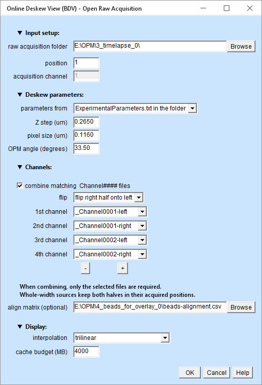
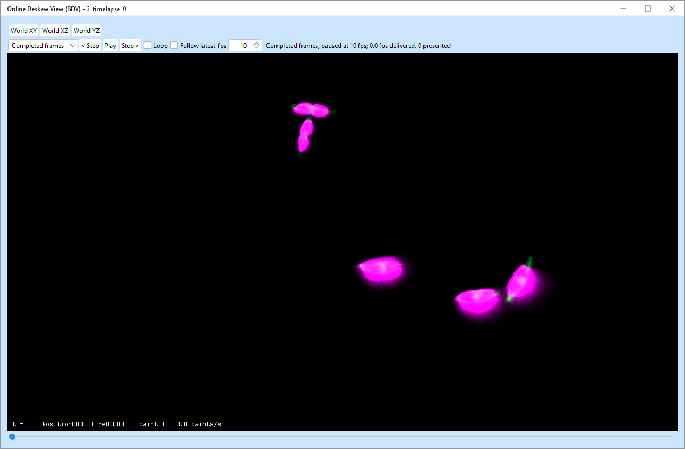
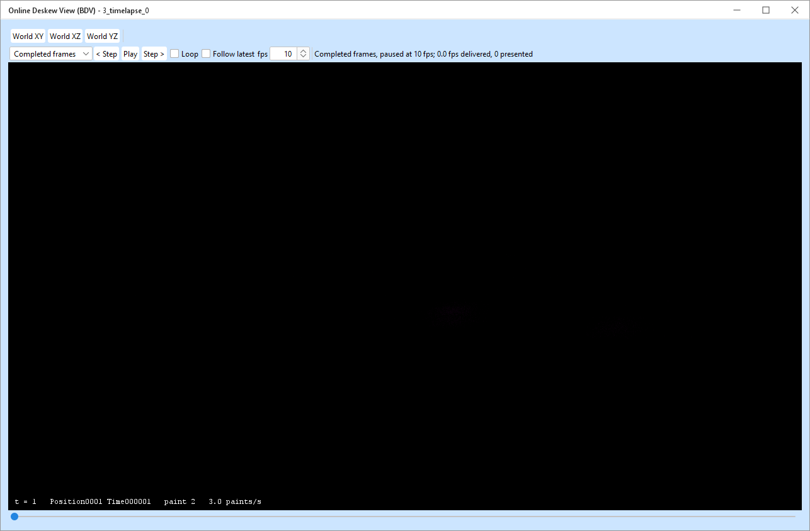
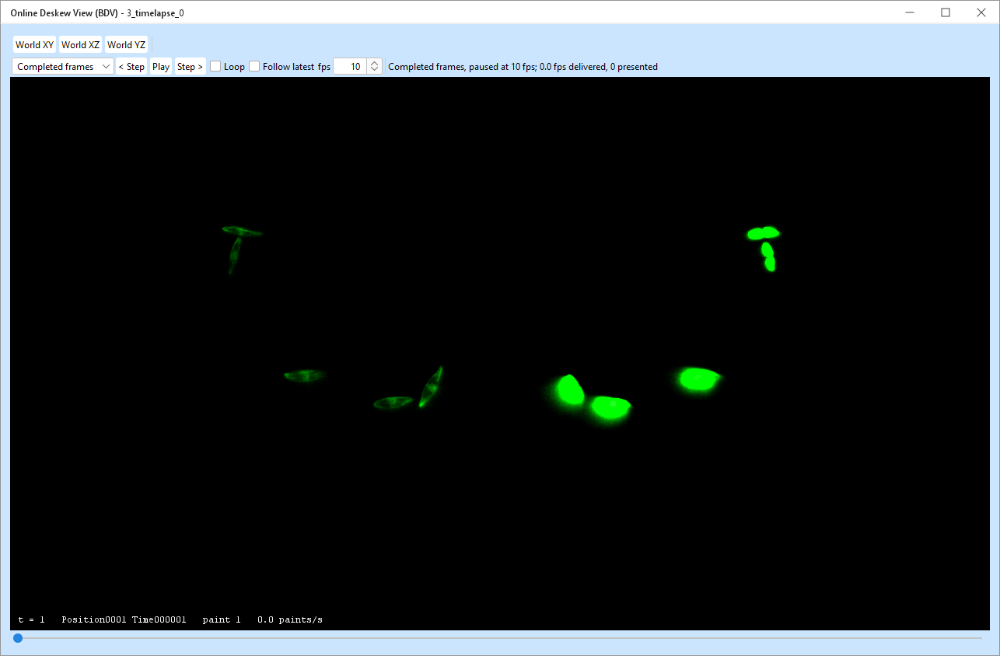
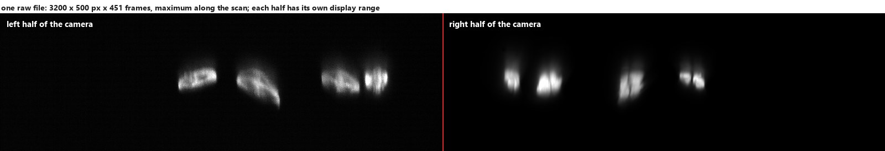
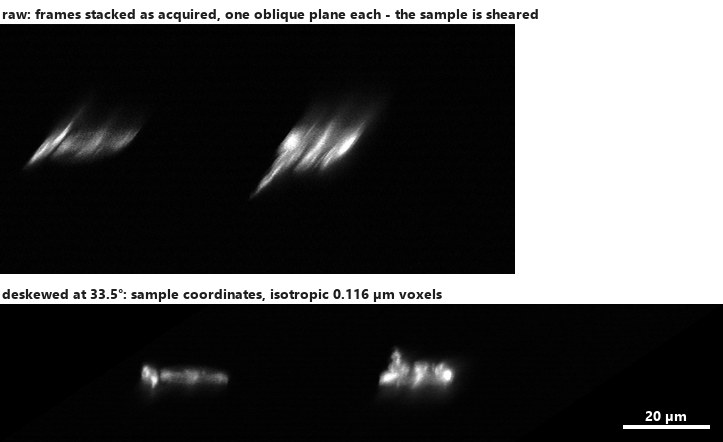

OPM Toolset · Fiji
Online Deskew View (BDV)
Explore raw OPM volumes in sample coordinates, overlay camera channels and play a folder of time points. Deskewing and alignment are applied while drawing; the raw files are read without being changed.
Download the illustrated offline copy · All chapters · Short user guide
Before you start
Use a Fiji build of OPM Toolset containing Online Deskew View (BDV). It is separate from OPM Data Viewer, which opens processed TIFF or OME-Zarr results and exports regions. This viewer opens raw acquisition folders and writes no deskewed volume or movie. To save results, use Deskew Live or Batch Processing > Deskew; to process an image already open in Fiji, use Deskew Image.
Supported raw data
- TIFF or BigTIFF, uncompressed, 16-bit, one sample per pixel. Each plane's strips must form one contiguous block. Different strip sizes between files are supported. Compressed, tiled, RGB/multi-sample, 8-bit/32-bit and non-contiguous plane layouts are outside this reader; unsupported input is refused with a reason.
- One folder, one selected position. The scan is not recursive. Keep processed results and unrelated TIFFs elsewhere.
- The usual name is
sample_Position0001_Time000001_Channel0001_Frames_1_451.tiff._Positionselects a stage position,_Channelan acquisition file,_Timeorders time points numerically, and_Frames_a_bpromisesb-a+1planes. - Missing position/channel tokens default to 1. If no selected file has a time token, filename order provides one time point per file; use explicit matching time tokens to pair several acquisition files. In a numbered acquisition, files without a time token cannot join its numbered axis. Duplicate files for one position/time/channel are ambiguous and withheld; remove the unwanted duplicate before expecting that time to appear.
- A file without a
_Frames_a_btoken can be opened if present in the initial scan, labelled depth unverified. New arrivals of unverified depth are withheld by the normal UI. A valid_Framestoken is needed for reliable live completeness checking; a malformed/reversed range is an error, and a truncated file is not made complete by being quiet.
Opening needs at least one viewable selected file and valid geometry. An empty folder cannot open yet. If another selected file of that time has not arrived, the window can open, but that time remains unavailable until all its selected files are ready.
Open a folder
Plugins > OPM Toolset > Online Deskew View (BDV) > Open Raw Acquisition...

| Field | Meaning |
|---|---|
| raw acquisition folder; position | The directory of raw TIFFs and the position to show. |
| acquisition channel | With combining off, choose one file channel; its left and right halves become the two sources. |
| parameters from | ExperimentalParameters.txt in the folder reads that file; manual uses Z step, pixel size and OPM angle. See precedence. |
| combine matching _Channel#### files | Enable the source slots. They choose the files and sources; the acquisition-channel field is then disabled. |
| flip | Mirror right halves onto left, or left onto right, using the same alignment calibration. |
| 1st channel, 2nd channel, …; − / + | Choose up to eight sources: _ChannelNNNN-left, -right, -whole, or - (skip). Order and repeats are allowed; removed slots become skip. |
| align matrix (optional) | A bare 2×3 or tagged alignment CSV from Channel Alignment. Empty means no registration correction. |
| interpolation | Trilinear, or nearest neighbour. The default BDV I key changes it after opening. |
| cache budget (MB) | Memory allowance for this view's tracked data and rendering buffers, in decimal MB. It is not Fiji's heap size. |
Press OK to open. The status card identifies the geometry actually used. The dialog remembers its inputs; the geometry and alignment are captured when the view opens. Reopen to apply a different parameter or alignment file.
Navigate and play

| Control | Action |
|---|---|
| World XY / XZ / YZ | Orient the view to the sample's world plane through the current centre, keeping zoom, time and source placement. Completed mode redraws that view. |
| Progressive / Completed frames | Select how frames become visible; see the promises below. |
| Play / Pause; < Step / Step > | Play the current catalogue or pause. Step moves one time point and stays paused. |
| fps | Target cadence (1–60). It is not a guaranteed delivered rate. |
| Loop | Wrap at the current ends while playing. Without Loop, playback stops at the end; it does not automatically restart when a file arrives. |
| Follow latest | Pause playback and show the newest ready time. A newer ready arrival takes over. It can coalesce arrivals, so it is not an every-frame movie. Loop has no effect on it. |
| Time slider or manual time change | Seek to a time, pause playback and release Follow latest. Play and Step also release Follow latest. |
| BDV source controls and display ranges | Hide sources, change colours and brightness. These affect drawing; hiding a source does not remove its file from the selected-file readiness requirement. |
BDV's normal gestures pan, zoom, rotate and move through slices. I toggles interpolation and the side panel holds source controls. Prefer the labelled World buttons for sample-axis views; BDV's own source-axis shortcuts can refer to the raw source's axes. Editing the view during completed playback requests the new view and keeps playback tied to its time.
With BDV's default keymap, left-drag rotates; right- or middle-drag pans; the wheel moves through slices; Ctrl+Shift+wheel zooms on Windows. ]/[ changes time, S opens brightness, F6 opens visibility controls, and P opens the side panel. F toggles fused display. A customised keymap may differ.
Two display modes, two promises
Progressive moves the BDV time point at the requested rate and lets BDV refine the picture as data load. During navigation or fast playback, missing cells can appear as placeholders. A reported time-point move or paint is not evidence that every pixel of that frame was ready. Use this mode for responsive exploration.
Completed frames prepares the required data and draws a whole screen image before presenting it with its own time label. All selected channels in that image belong to the same time and captured view. The next movie frame follows only after presentation; slow preparation slows playback instead of dropping ready frames to meet fps. The previous valid image can remain visible while a new one is prepared.
Unavailable is different from slow. During a completed-frame movie, a time whose selected files are incomplete, missing, changed or failed is skipped with a reason and count. A rendering failure or a frame too large for the budget pauses playback and reports it. Thus “completed” describes images actually presented; it does not promise that every time in a growing or damaged acquisition will be shown.
The status line distinguishes presented movie frames from redraws and progressive time moves. Completed playback reports its delivered rate and latency; its latency summary uses the most recent 256 presented movie frames, while counts cover the run.

Recipe: one raw volume
- Put the raw TIFF in a folder of its own. Keep its acquisition filename, including the plane count, if available.
- Copy its
ExperimentalParameters.txtalongside it, or select manual geometry in the dialog. - Choose the position and acquisition channel, leave combining off, and choose the flip and optional alignment CSV.
- To see the full camera width instead, enable combining, select
_Channel0001-wholein one slot and skip the others. Whole sources retain the acquired arrangement, without folding.
The viewer cannot consume an ImageJ window directly. Save an uncompressed 16-bit raw stack to a folder first, or use Deskew Image to create a deskewed copy of the image already open.
Recipe: two files, four sources, one movie
- Use matching position/time tokens in the
_Channel0001and_Channel0002filenames. - Enable combining. Use + to expose four slots and select
_Channel0001-left,_Channel0001-right,_Channel0002-left,_Channel0002-right. Skips are omitted from the displayed source list; the first displayed sources receive green, magenta, cyan and yellow, which BDV can change. - Choose either flip. Supply a tagged alignment CSV that identifies each source against one reference. A bare CSV corrects the same half-to-half relation within each file; it does not register file 2 to file 1.
- Open, choose Completed frames, set fps, optionally select Loop, then Play.
Only files used by the selected slots are required. Selecting four halves from two files requires those two files at each time. A time with one file missing is unavailable; the viewer never substitutes a different time's partner. Whole and half sources may be mixed because each BDV source has its own interval. For an odd camera width, the halves discard the centre column and a whole source retains it.

Recipe: follow a growing acquisition
- Wait for the first viewable selected file, then open its raw folder with the correct geometry.
- Select Follow latest to watch the newest ready time, or Play with Loop to revisit the catalogue as it grows. Choose Progressive or Completed frames for the corresponding display promise.
- Read the Online Deskew status card if a time has not appeared. It lists readiness by file, including
k of n planes, missing partners and failures.
The folder is watched and periodically reconciled, so missed filesystem events are repaired. Ordinary arrivals wait for a quiet interval (currently about one second) and then a structural and plane-count check. Quietness alone is not proof that a file is complete. Files without a usable plane-count token arriving after opening remain withheld.
When Deskew Live runs in the same Fiji process, its accepted-file notification lets the viewer bypass that quiet wait. The viewer still performs its own validation, and presentation still takes time. The viewer opens no TCP socket; another Fiji's Deskew Live supplies no in-process hint. Its processing and acceptance rules are unchanged.
A late older time is inserted in numeric order without changing the identity of the selected time. Follow latest stays at the newest ready time. With several selected acquisition files, it waits for the complete selected set.
Changed, deleted and conflicting files
Once a checked version changes, is deleted or becomes ambiguous, it is withdrawn; a completed image using that version is removed rather than left looking valid. A replacement is checked and published as a new version when ready. No partial replacement is mixed into a completed frame. Resolve duplicate-slot conflicts by leaving only the intended file.
Detection follows filesystem observation and validation; it is not protection against arbitrary in-place edits that hide all version signals. Keep completed acquisition files immutable. Long-running repeated replacement/conflict cycles retain revocation history and have not been qualified as a bounded-memory, high-churn workflow.
Geometry and registration: which input wins?
| Choice | Applied rule |
|---|---|
| Geometry from file | Use the folder's ExperimentalParameters.txt; the manual fields do not override it. A missing or invalid file is an error, not a silent fallback. |
| Manual geometry | Use the three entered values even if a parameter file is present. Step and pixel size must be positive; the angle magnitude is at least 0.5° and less than 89.5°. Negative angles are supported. |
| No alignment CSV | Deskew and the selected half reflection only; no measured registration correction. |
| Bare 2×3 CSV | The measured right-to-left half alignment is reused for each acquisition file and reframed for flip-left. It does not supply cross-file alignment or whole-source matrices. |
| Tagged CSV | Each source key uses its own matrix; a missing entry means identity. For flip-left, half matrices are reframed to the unflipped right half of the reference acquisition channel. Whole keys use their own matrix without reflection. |
The alignment acts in deskewed XY pixel coordinates, with Z unchanged. The final view uses micrometres; the scan step is already included in deskewing and is not applied twice. All sources use the chosen geometry. File dimensions determine their intervals and reflection extents, including a partner that arrives later with a different width. An alignment measured for one ROI is not thereby calibrated for a different ROI.
There is no dialog input for an arbitrary 3-D deskew matrix, no automatic SIFT/bead fitting while viewing, and no hot reload of calibration files. The viewer computes its affine from the three geometry values. Measure alignment separately with Channel Alignment. Trilinear sampling blends safe 16-bit values; nearest preserves sampled raw intensities. Exact equality with a stored, separately resampled registration is not promised for arbitrary fractional transforms or boundary cases.
Cache budget and Fiji memory
The default budget suggestion is 40% of the JVM maximum heap, with a 256 MB minimum suggestion; accepted budgets have a 64 MB floor. MB here means one million bytes. The budget covers tracked raw cells, active reads, read buffers and staged screen images, including transitions and prepared data. The status card reports these categories.
A requested budget below the minimum needed for whole cells and concurrent reads is raised to that minimum, with a message in the status card. Check the reported allowance if it differs from what you entered.
It is not a cap on the entire JVM. Fiji, other plugins, BDV's progressive rendering, metadata and Java overhead also need memory. Set Fiji's heap through Edit > Options > Memory & Threads, restart as required, and leave headroom when choosing the viewer budget. Separate viewer windows each have their own allowance.
A larger cache can keep more time points resident, making replay faster. When a completed frame cannot fit even after eviction, playback pauses with a budget message. Reduce the demanded view or selected sources, or reopen with a larger budget that the JVM can support. Close the viewer to release its files, cache and workers; quitting Fiji also closes it.
Measured performance and its limits
These are reference measurements from the M2 qualification, not guarantees for a new acquisition. The machine was an Intel Core Ultra 9 285H (16 cores), 64 GB RAM; data were 50 raw time points of 3200 × 500 × 451, about 1.44 GB per file, two half sources with trilinear sampling. Java 21.0.7 used a 16 GB heap, a 6000 MB cache and eight I/O/render threads, outside test instrumentation. Runs began with an empty application cache; the OS cache was not cleared. More sources and larger views can cost more.
| View / workload | Recorded observation | Scope |
|---|---|---|
| XY, completed first pass in a real window | 10.1–10.2 fps at 10 requested | After the sampler correction, 12 fresh runtimes, Maven/Fiji stacks; 800 × 584 and 1577 × 826 canvases. |
| XY, resident replay in those windows | 28.9–29.8 fps (small); 21.8–26.7 fps (large), at 30 requested | After the correction; resident data, not first disk access. |
| XZ, first pass / resident replay | 10.1 fps / 33.3–35.6 fps | Earlier 1600 × 1000 completed-render harness measurements retained by M2-Q. |
| YZ, first-pass latency / resident replay | p95 741–849 ms / 28.8–29.2 fps | Earlier harness; resident replay spans only two time points within the 6 GB budget. |
| Oblique, first pass / resident replay | About 1.5–1.8 fps, p95 628–954 ms / 16.0–18.7 fps | Earlier harness, two declared oblique cameras; resident replay spans two or three time points. |
The XZ/YZ/oblique rows predate the faster completed-frame sampler and were not repeated as full traversal benchmarks after that correction. They remain historical measurements, not claims of current maxima. Progressive timing measures time-point moves, not complete frames. No universal runtime-equivalence or garbage-collection claim follows from these runs.
Raw TIFF strips make side and oblique views expensive: a YZ slice can require almost the whole 1.44 GB file, compared with roughly 24 MB for XY and 17 MB for XZ in this acquisition. Smooth first-pass YZ/oblique movies are not established. A raw multiscale pyramid or OME-Zarr conversion is deferred; this viewer currently has no OME-Zarr input or coarse mipmap path.
Troubleshooting and known limits
- Black or blank: inspect source visibility, brightness and the status card. During progressive loading it may be incomplete. During a seek to an unavailable time, check missing partners and the reported plane counts.
- No matching files: check the folder, position, channel tokens and selected slots. A numbered folder cannot mix numbered and unnumbered times. Subfolders are not scanned.
- Wrong geometry or overlay: check units, angle sign, geometry source, source keys and the calibration ROI. Whole sources do not fold; absent tagged matrices do not imply registration.
- Slow movie: distinguish incomplete files, storage reads and rendering. Lower requested fps does not make a first read faster. Compare resident replay at the same view; avoid comparing progressive moves to completed fps.
- No rendered movie export, projection calculation, result writing, arbitrary 3-D matrix import or in-memory image input. Use the processing and result-viewing commands for those tasks.
Why the data has to be deskewed
An oblique plane microscope (OPM) images a plane that is tilted with respect to the coverslip, and scans that tilted plane sideways through the sample. Each camera frame is therefore one oblique slice, and the stack of frames is a sheared version of the sample: a round nucleus looks stretched and leaning, distances along the stack are not distances in the sample, and nothing measured on the raw stack is in sample coordinates.
Deskewing is the one geometric correction that undoes this. It maps every raw voxel to where it belongs in the sample, and resamples the result onto a regular grid, giving an ordinary 3-D volume with cubic voxels that can be projected, measured, segmented and tracked with any tool that expects a normal stack.


What deskewing produces
Deskewing defines the mapping into sample coordinates. It can be evaluated while drawing a view, without storing a new volume, or resampled into an output volume. A view alone does not calculate projections or write results. Processing that saves results can produce:
- a deskewed volume per time point and per output channel, with isotropic voxels;
- orthogonal projections of that volume - maximum or mean along X, Y and Z
(
maxZis the familiar top view,maxYandmaxXthe two side views); - a record of how it was produced: the acquisition geometry, the deskew matrix, and the channel and alignment settings used.
The geometry, in three numbers
Everything the deskew needs is three numbers. They can be read from the acquisition's
ExperimentalParameters.txt or supplied explicitly:
| Number | In the file | Example | What it is |
|---|---|---|---|
| XY pixel size p | Pixel size at object /um | 0.116 µm | One camera pixel, projected into the sample. It also becomes the voxel size of the deskewed volume in all three directions. |
| Z step size Δ | um per galvo DU ×
Galvo DUs per step | 0.265 µm | How far the oblique plane moves between two frames. It is the raw stack's "Z" step, measured along the coverslip, not a focus step. |
| OPM angle θ | Tilt angle | 33.5° | The angle between the imaged plane and the coverslip. |
Written out, a camera row y of frame f lands at
Y = y·cos θ + f·Δ/p Z = (h − y)·sin θ X = x (all in pixels of size p)so the deskewed volume of a camera half w × h pixels wide and N frames long comes out as
X = w Y ≈ h·cos θ + N·Δ/p Z ≈ h·sin θ
= 1600 px (185.6 µm) = 1448 px (168.0 µm) = 276 px (32.0 µm) for the example belowThe voxels are cubes, and that is deliberate. The deskew is evaluated on a grid
measured in camera pixels, so the result is isotropic at the XY pixel size (0.116 µm here) in X,
Y and Z. The step size and the angle decide how large the volume is, not how fine it is.
A deskewed volume therefore carries the same pixel size in all three axes, and Fiji's
Image ▸ Properties will show 0.116 three times.
The files: what goes in, what comes out
Input: one BigTIFF per time point and acquisition channel
The microscope writes one file per time point per acquisition channel, named by position, time and channel, plus one metadata file per acquisition:
3_timelapse_Position0001_Time000001_Channel0001_Frames_1_451.tiff 1.44 GB, 3200 × 500 × 451, 16-bit
3_timelapse_Position0001_Time000001_Channel0002_Frames_1_451.tiff the second acquisition channel
ExperimentalParameters.txt the geometry, read automaticallyThese are BigTIFF files, which plain ImageJ cannot open; the toolset reads them with its own reader, so no Bio-Formats detour and no modal error interrupts an unattended run. One file carries both camera halves (3200 = 2 × 1600 px), which is why one acquisition channel can yield two output channels.
Output: deflated TIFF, OME-Zarr, or both
| deflated TIFF | OME-Zarr | |
|---|---|---|
| What it is | One compressed TIFF per result: the volume, and one per projection. | One chunked dataset per acquisition, time points appended as they are written. |
| Layout | result/deskew/…-deskewed.tif,
result/maxZ/…-deskewed-maxZprojection.tif, … |
result/<acquisition>.ome.zarr with s0 (the 5-D volume)
and projections/maxZ…meanX inside it. |
| Channels | The composed result: flipped, aligned, in the configured channel order. | The stored camera halves, untouched - one channel each, unflipped and unaligned - plus the flip and the alignment matrix as metadata. |
| Readable while written | Only once a file is complete (which the toolset checks before reading one). | Yes: each time point is committed on its own, which is what makes a live preview of a run in progress possible. |
| Good for | Handing single results to someone, or to a tool that wants TIFF. | Time lapses, live monitoring, and revisiting the alignment later without reprocessing. |
Why OME-Zarr keeps the halves apart. Flipping one camera half onto the other and aligning it is a display decision, and a rigid 2-D transform can be measured better later (with a bead acquisition, for instance). By storing the halves as they were acquired and keeping the matrix in the metadata, the toolset can change the overlay of a finished dataset in seconds, without reprocessing a single voxel - while a TIFF result has the decision baked into its pixels.